Riemann for Anti-Dummies Part 28
BRINGING THE INVISIBLE TO THE SURFACE
When Carl Friedrich Gauss, writing to his former classmate Wolfgang Bolyai in 1798, criticized the state of contemporary mathematics for its "shallowness", he was speaking literally - and, not only about his time, but also of ours. Then, as now, it had become popular for the academics to ignore, and even ridicule, any effort to search for universal physical principles, restricting the province of scientific inquiry to the, seemingly more practical task, of describing only what's on the surface. Ironically, as Gauss demonstrated in his 1799 doctoral dissertation on the fundamental theorem of algebra, what's on the surface, is revealed only if one knows, what's underneath.
Gauss' method was an ancient one, made famous in Plato's metaphor of the cave, and given new potency by Johannes Kepler's application of Nicholas of Cusa's method of On Learned Ignorance. For them, the task of the scientist was to bring into view, the underlying physical principles, that could not be viewed directly-the unseen that guided the seen.
Take the illustrative case of Pierre de Fermat's discovery of the principle, that refracted light follows the path of least time, instead of the path of least distance followed by reflected light. The principle of least-distance, is a principle that lies on the surface, and can be demonstrated in the visible domain. On the other hand, the principle of least-time, exists "behind", so to speak, the visible, brought into view, only in the mind. On further reflection, it is clear, that the principle of least-time, was there all along, controlling, invisibly, the principle of least-distance. In Plato's terms of reference, the principle of least-time is of a "higher power", than the principle of least-distance.
Fermat's discovery is a useful reference point for grasping Gauss' concept of the complex domain. As Gauss himself stated, unequivocally, this is not Leonard Euler's formal, superficial concept of "impossible" numbers (a fact ignored by virtually all of today's mathematical "experts"). Rather, Gauss' concept of the complex domain, like Fermat's principle of least-time, brings to the surface, a principle that was there all along, but hidden from view.
As Gauss emphasized in his jubilee re-working of his 1799 dissertation, the concept of the complex domain is a "higher domain", independent of all a priori concepts of space. Yet, it is a domain, "in which one cannot move without the use of language borrowed from spatial images."
The issue for Gauss, as for Gottfried Leibniz, was to find a general principle, that characterized what had become known as "algebraic" magnitudes. These magnitudes, associated initially, with the extension of lines, squares, and cubes, all fell under Plato's concept of "dunamais", or "powers".
Leibniz had shown, that while the domain of all "algebraic" magnitudes consisted of a succession of higher powers, the entire algebraic domain, was itself dominated by a domain of a still higher power, that Leibniz called, "transcendental". The relationship of the lower domain of algebraic magnitudes, to the higher non-algebraic domain of transcendental magnitudes, is reflected in, what Jacob Bernoulli discovered about the equiangular spiral. (See Figure 1.)
Figure 1 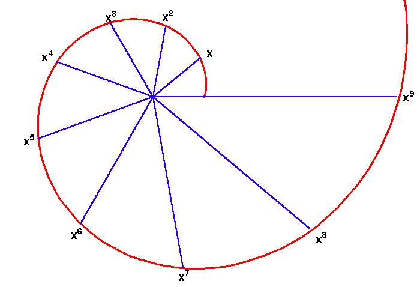 |
Leibniz and Johann Bernoulli (Jakob's brother) subsequently demonstrated that his higher, transcendental domain, exists not as a purely geometric principle, but originates from the physical action of a hanging chain, whose geometric shape Christaan Huygens called a catenary. (See Figure 2.) Thus, the physical universe itself demonstrates, that the "algebraic" magnitudes associated with extension, are not generated by extension. Rather, the algebraic magnitudes are generated from a physical principle that exists, beyond simple extension, in the higher, transcendental, domain.
Figure 2 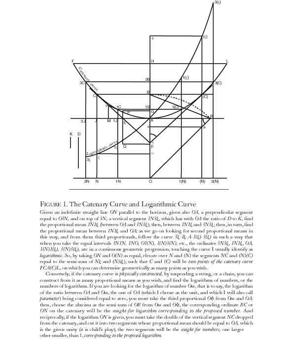 |
Gauss, in his proofs of the fundamental theorem of algebra, showed that even though this transcendental physical principle was outside the visible domain, it nevertheless cast a shadow that could be made visible in what Gauss called the complex domain.
As indicated in "Gauss' Declaration of Independence," the discovery of a general principle for "algebraic" magnitudes was found, by looking through the "hole" represented by the square roots of negative numbers, which could appear as solutions to algebraic equations, but lacked any apparent physical meaning. For example, in the algebraic equation x2 = 4, "x" signifies the side of a square whose area is 4, while, in the equation x2 = -4, the "x" signifies the side of a square whose area is -4, an apparent impossibility. For the first case, it is simple to see, that a line whose length is 2 would be the side of the square whose area is 4. However, from the standpoint of the algebraic equation, a line whose length is -2, also produces the desired square.
At first glance, a line whose length is -2 seems as impossible as a square whose area is -4. Yet, if you draw a square of area 2, you will see that there are two diagonals, both of which have the power to produce a new square whose area is 4. These two magnitudes are distinguished from one another only by their direction, so one is denoted as 2 and the other as -2.
Now extend this investigation to the cube. In the algebraic equation x3 = 8, there appears to be only one number, 2 which satisfies the equation, and this number signifies the length of the edge of a cube whose volume is 8. This appears to be the only solution to this equation since -2x - 2x - 2 = -8.
The anomaly that there are two solutions, which appeared for the case of a quadratic equation, seems to disappear, in the case of the cube, for which there appears to be only one solution.
Not so fast. Look at another geometrical problem, that, when stated in algebraic terms, poses the same paradox--the trisection of an arbitrary angle. Like the doubling of the cube, Greek geometers could not find a means for equally trisecting an arbitrary angle, from the principle of circular action itself. The several methods discovered, (by Archimedes, Erathosthenes, and others), to find a general principle of trisecting an angle, were similar to those found, by Plato's collaborators, for doubling the cube. That is, this magnitude could not be constructed using only a circle and a straight line, but it required the use of extended circular action, such as conical action.
But, trisecting an arbitrary angle presents another type of paradox which is not so evident in the problem of doubling the cube. To illustrate this, make the following experiment:
Draw a circle. For ease of illustration, mark off an angle of 60 degrees. It is clear that an angle of 20 degrees will trisect this angle equally. Now add one circular rotation to the 60 degree angle, making an angle of 420 degrees. It appears these two angles are essentially the same. But, when 420 is divided by 3 we get an angle of 140 degrees. Add another 360 degree rotation and we get to the angle of 780 degrees, which appears to be exactly the same as the angles of 60 and 420 degrees. Yet, when we divide 780 degrees by 3 we get 260 degrees. Keep this up, and you will see that the same pattern is repeated over and over again. (See Figure 3.)
Figure 3 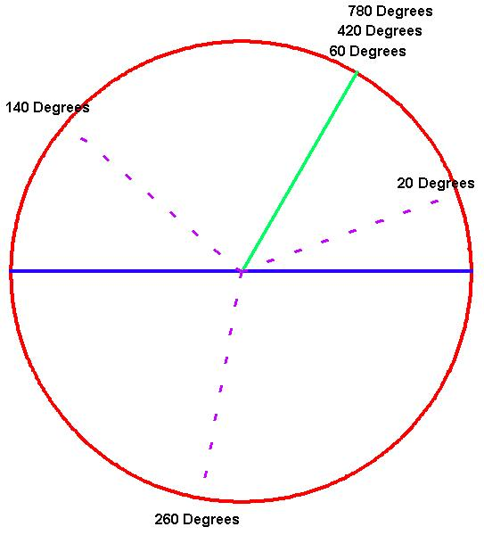 |
Looked at from the domain of sense certainty, the angle of 60 degrees can be trisected by only one angle, that is, an angle of 20 degrees. Yet, when looked at beyond sense certainty, there are clearly three angles that "solve" the problem.
This illustrates another "hole" in the algebraic determination of magnitude. In the case of quadratic equations, there seems to be two solutions to each problem. In some cases, such x2 = -4, those solutions seem to have a visible existence. While for the case, x2 = -4, there are two solutions, 2√-1 and -2√-1, both of which seem to be "imaginary", having no physical meaning. In the case of cubic equations, sometimes there are three visible solutions, such as in the case of trisecting an angle. Yet, in the case of doubling the cube, there appears to be only one visible solution, but two "imaginary" solutions, specifically: -1 - √3√-1, -1 + √3√-1. Biquadratic equations, (for example x4 = 16) , that seem to have no visible meaning themselves, have four solutions, two "real" (2 and -2) and two "imaginary" (2√-1 and -2√-1). Things get even more confused for algebraic magnitudes of still higher powers. This anomaly poses the question that Gauss resolved in his proof of what he called the fundamental theorem of algebra; that is: how many solutions are there for any algebraic equation?
The "shallow" minded mathematicians of Gauss' day, such as Euler, Lagrange, and D'Alembert, took the superficial approach of asserting that any algebraic equation has as many solutions as it has powers, even if those solutions were "impossible", such as the square roots of negative numbers. (This sophist's argument is analogous to saying there is a difference between man and beast, but, this difference is meaningless.)
Gauss, in his 1799 dissertation, polemically exposed this fraud for the sophistry it was. "If someone would say a rectilinear equilateral right triangle is impossible, there will be nobody to deny that. But, if he intended to consider such an impossible triangle as a new species of triangles and to apply to it other qualities of triangles, would anyone refrain from laughing? That would be playing with words, or rather, misusing them."
For, Gauss, no magnitude could be admitted, unless its principle of generation was demonstrated. For magnitudes associated with the square roots of negative numbers, that principle was the complex physical action of rotation combined with extension. Magnitudes generated by this complex action, Gauss called "complex numbers" in which each complex number denoted a quantity of combined rotational and extended action. The unit of action in Gauss' complex domain is a circle, which is one rotation with an extension of unit length. The number 1 signifies one complete rotation, -1 one half a rotation, √-1 one fourth a rotation, and -√-1 three fourths a rotation. (See Figure 4.)
Figure 4 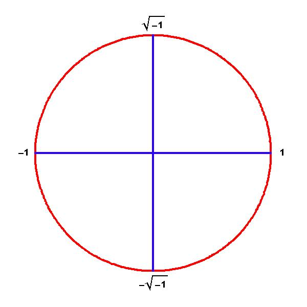 |
These "shadows of shadows", as he called them, were only a visible reflection of a still higher type of action, that was independent of all visible concepts of space. These higher forms of action, although invisible, could nevertheless be brought into view as a projection onto a surface.
Gauss' approach is consistent with that employed by the circles of Plato's Academy, as indicated by their use of the term "epiphanea" for surface, which comes from the same root as the word, "epiphany". The concept indicated by the word "epiphanea" is, " that on which something is brought into view".
From this standpoint, Gauss demonstrated, in his 1799 dissertation, that the fundamental principle of generation of any algebraic equation, of no matter what power, could be brought into view, "epiphanied", so to speak, as a surface in the complex domain. These surfaces were visible representations, not, as in the cases of lines, squares and cubes, of what the powers produced, but of the principle that produced the powers.
To construct these surfaces, Gauss went outside the simple visible representation of powers, such as squares and cubes, by seeking a more general form of powers, as exhibited in the equiangular spiral. (See Figure 5.) Here, the generation of a power, corresponds to the extension produced by an angular change. For example, the generation of square powers, corresponds to the extension that results from a doubling of the angle of rotation around the spiral.
Figure 5 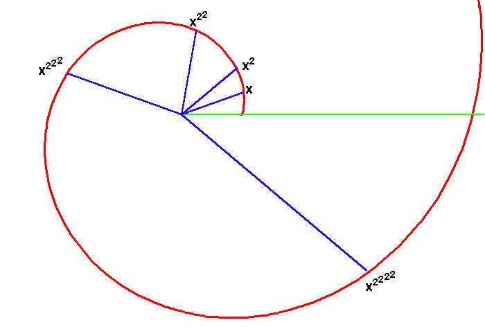 |
The generation of cubed powers corresponds to the extension that results from tripling the angle of rotation. Thus, it is the principle of squaring that produces square magnitudes, and the principle of cubing that produces cubics. (See figure 6.)
Figure 6 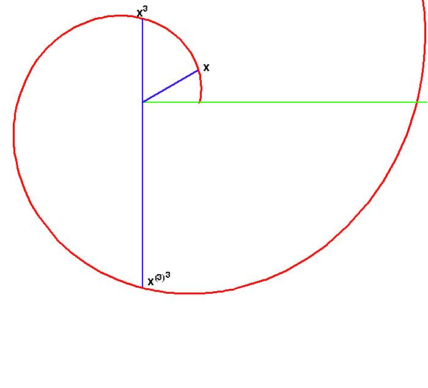 |
For example, in Figure 7 , the complex number z is "squared" when the angle of rotation is doubled from x to 2x and the length squared from A to A2. In doing this, the smaller circle maps twice onto the larger "squared" circle.
Figure 7 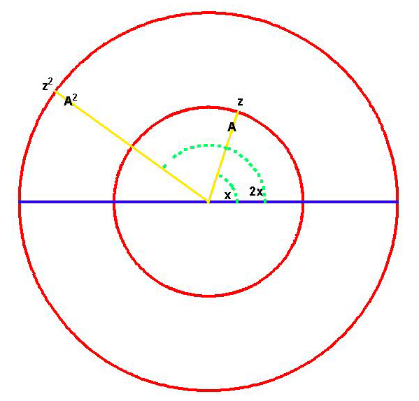 |
In Figure 8, the same principle is illustrated with respect to cubing. Here the angle x is tripled to 3x, and the length A is cubed to A3. In this case, the smaller circle maps three times onto the larger, "cubed" circle.
Figure 8 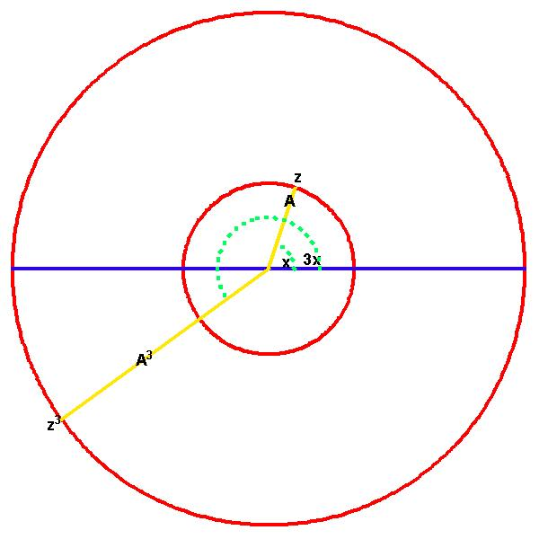 |
And so on for the higher powers. The fourth power maps the smaller circle four times onto the larger. The fifth power, five times, and so forth.
This gives a general principle that determines all algebraic powers, as, from this standpoint, all powers are reflected by the same action. The only thing that changes with each power, is the number of times that action occurs. Thus, each power is distinguished from the others, not by a particular magnitude, but by a topological characteristic.
In his doctoral dissertation, Gauss used this principle to generate surfaces that expressed the essential characteristic of powers in an even more fundamental way. Each rotation and extension, produced a characteristic right triangle. The vertical leg of that triangle is called the sine and the horizontal leg of that triangle is called the cosine. (See Figure 9.)
Figure 9 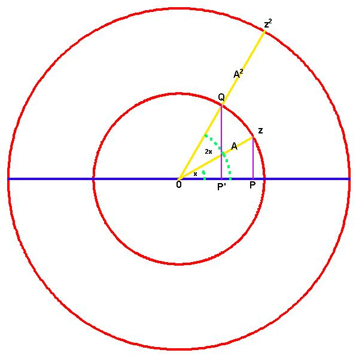 |
There is a cyclical relationship between the sine and cosine which is a function of the angle of rotation. When the angle is 0, the sine is 0 and the cosine is 1. When the angle is 90 degrees the sine is 1 and the cosine is 0. Looking at this relationship for an entire rotation, the sine goes from 0 to 1 to 0 to -1 to 0, while the cosine goes from 1 to 0 to -1 to 0 and back to 1. (See Figure 10)
Figure 10 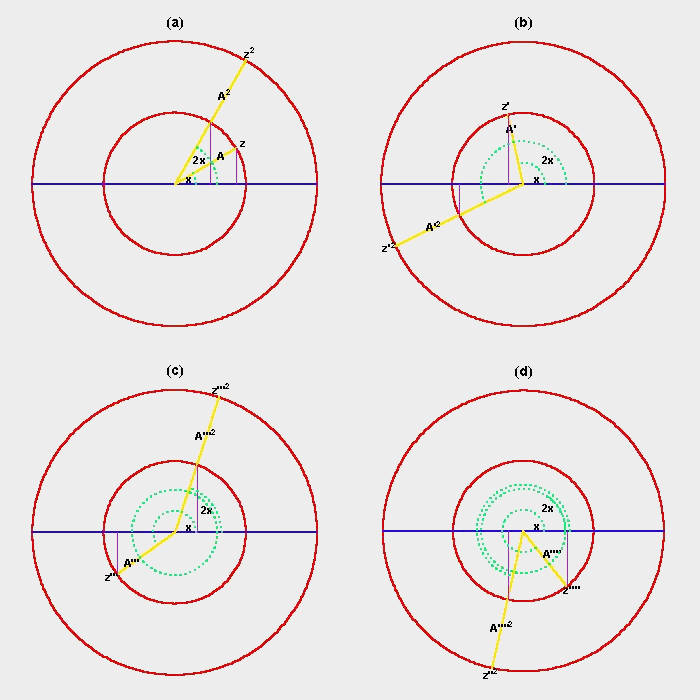 |
In Figure 9, as z moves from 0 to 90 degrees, the sine of the angle varies from 0 to 1, but at the same time, the angle for z2 goes from 0 to 180 degrees, and the sine of z2 varies from 0 to 1 and back to 0. Then as z moves from 90 degrees to 180 degrees, the sine varies from 1 back to 0, but the angle for z2 has moved from 180 degrees to 360 degrees, and its sine has varied from 0 to -1 to 0. Thus, in one half rotation for z, the sine of z2 has varied from 0 to 1 to 0 to -1 to 0.
In his doctoral dissertation, Gauss represented this complex of actions as a surface. (See Figures 11, 12, 13.) Each point on the surface is determined so that its height above the flat plane, is equal to the distance from the center, times the sine of the angle of rotation, as that angle is increased by the effect of the power. In other words, the power of any point in the flat plane, is represented by the height of the surface above that point. Thus, as the numbers on the flat surface move outward from the center, the surface grows higher according to the power. At the same time, as the numbers rotate around the center, the sine will pass from positive to negative. Since the numbers on the surface are the powers of the numbers on the flat plane, the number of times the sine will change from positive to negative, depends on how much the power changes the angle (double for square powers, triple for cubics, etc.). Therefore, each surface will have as many "humps" as the equation has dimensions. Consequently, a quadratic equation will have two "humps" up and two "humps" down (Figure 11).
Figure 11 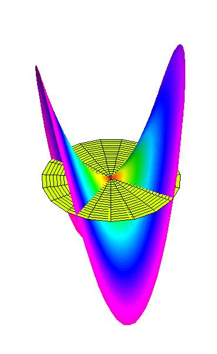 |
Figure 12 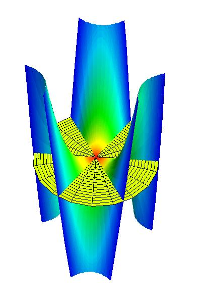 |
Figure 13 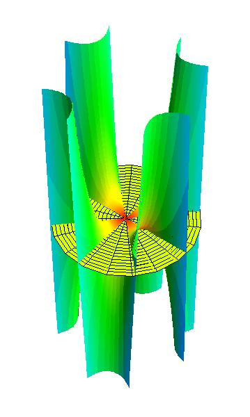 |
Gauss specified the construction of two surfaces for each algebraic equation, one based on the variations of the sine and the other based on the variations of the cosine. (See figures 14a and 14b.)
Figure 14a 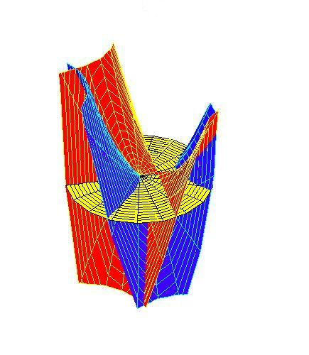 |
Figure 14b 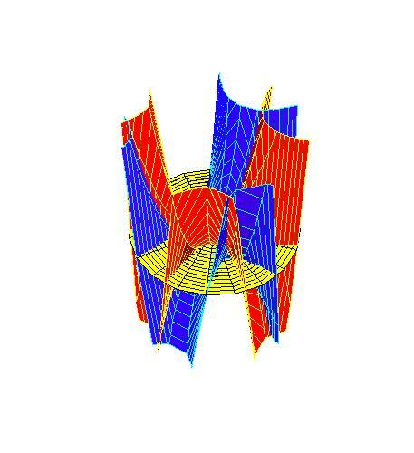 |
Each of these surfaces will define definite curves where the surfaces intersect the flat plane. The number of curves will depend on the number of "humps" which in turn depend on the highest power. Since each of these surfaces will be rotated 90 degrees to each other, these curves will intersect each other, and the number of intersections, will correspond to the number of powers. (See figures 15a and 15b.) If the flat plane is considered to be 0, these intersections will correspond to the solutions, or "roots" of the equation. Thus, proving that an algebraic equation has as many roots as its highest power.
Figure 15a 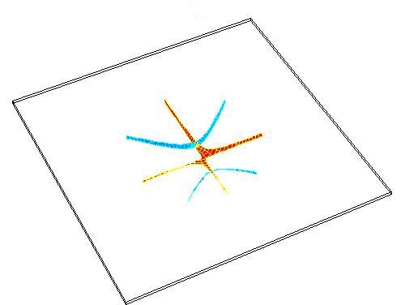 |
Figure 15b 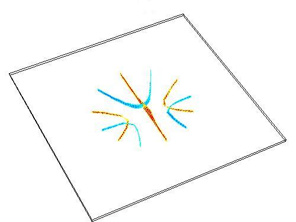 |
Step back and look at this work. These surfaces were produced, not from visible squares or cubes, but from the general principle of squaring, cubing, and higher powers. They represent, metaphorically, a principle that manifests itself physically, but cannot be seen. By projecting this principle, the general form of Plato's powers, onto these complex surfaces, Gauss has brought the invisible into view, and made intelligible, something that is incomprehensible in the superficial world of algebraic formalism.
The effort to make intelligible the implications of the complex domain was a focus for Gauss throughout his life. Writing to his friend Hansen on December 11, 1825, Gauss said: "These investigations lead deeply into many others, I would even say, into the Metaphysics of the theory of space, and it is only with great difficulty can I tear myself away from the results that spring from it, as, for example, the true metaphysics of negative and complex numbers. The true sense of the square root of -1 stands before my mind fully alive, but it becomes very difficult to put it in words; I am always only able to give a vague image that floats in the air."
It is here, that Riemann begins.
{kind=link}
{kind=link}
{kind=link}
{kind=link}
{kind=link}
{kind=link}
{kind=link}
{kind=link}
{kind=link}
{kind=link}
{kind=link}
{kind=link}
{kind=link}
{kind=link}
{kind=link}